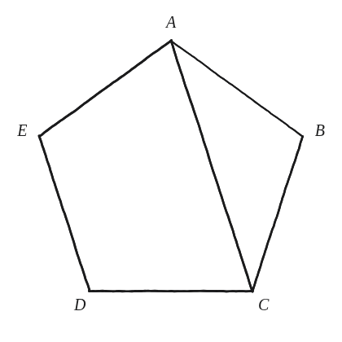
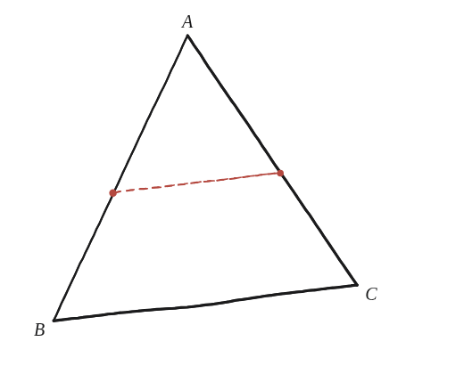

En realitat hi ha una altra tècnica per mesurar longituds, que vam fer servir per a la diagonal d'un pentàgon regular. Quina és?

No un càlcul nou: un nom
Aquesta pregunta no demana resoldre res de nou: demana reconèixer una tècnica que ja s'havia fet servir, sense dir-ne el nom, en un problema anterior.
Tornant a la diagonal del pentàgon
A les preguntes del pentàgon no es va mesurar cap segment directament amb un regle: es va trobar una figura semblant —més petita— amagada dins de la gran, i es va plantejar una equació a partir de la proporció entre totes dues. A la Qüestió 33 això és literal, i és el cas que l'enunciat esmenta: la bisectriu d'un angle de la base retalla, dins del triangle de costats d i base 1, un altre triangle amb els mateixos tres angles, i d'igualar-ne les proporcions en surt d²=d+1. A la Qüestió 32, la mateixa jugada dona el costat del pentàgon petit.
El mateix patró, en un triangle qualsevol
Un exemple més senzill de la mateixa idea: en un triangle, una línia paral·lela a un dels costats en talla els altres dos i crea un triangle petit, semblant a l'original. Coneixent la proporció d'escala entre tots dos, es pot trobar on exactament la paral·lela talla el segon costat, sense mesurar-lo directament —només plantejant la proporció.

El nom de la tècnica
Aquesta manera de mesurar —trobar dues figures semblants (una és una versió escalada de l'altra) i plantejar-hi una proporció, sense necessitat de Pitàgores ni de mesurar res directament— és, senzillament, raonar per semblança.
Una nota de vocabulari, perquè hi ha un parany de traducció. El llibre en diu dilation, que en anglès és el nom de la transformació que escala una figura des d'un punt fix. En català aquella transformació es diu homotècia; «dilatació» vol dir una altra cosa (la dels metalls amb la calor). Aquestes guies mantenen el nom «dilatació» com a nom del moviment, per fidelitat al llibre, però el terme que l'alumnat trobarà a classe és semblança i, per a la transformació concreta, homotècia.
La tècnica és raonar per semblança —el llibre en diu dilation; en català, la transformació corresponent és l'homotècia—: trobar una figura semblant, normalment més petita, amagada dins d'una altra, i plantejar-hi una proporció entre longituds corresponents. Ja s'havia fet servir, sense nomenar-la, a la Qüestió 33 per a la diagonal del pentàgon i a la Qüestió 32 per al costat del pentàgon petit del pentagrama.
Comprovació
Triangle amb costats 6 i 9 des d'un vèrtex; una paral·lela al tercer costat que talla el primer costat a 4 unitats del vèrtex. Per semblança, talla el segon costat a 4×(9/6)=6 unitats del mateix vèrtex.